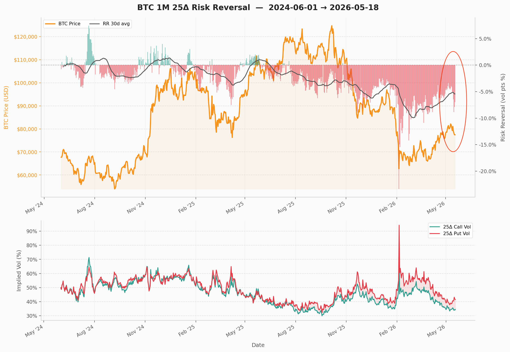

BTC Skew Is Stuck Negative: What the 1M 25Δ Risk Reversal Is Pricing In
The risk reversal is one of the most widely tracked sentiment gauges in derivatives markets. It strips out the level of volatility and isolates skew — the difference of volatility between call and put at the same delta and tenor. It's a clean read on what option traders think about where the market is heading, rather than what spot tells you after the fact.
The indicator is well-studied in FX markets. In crypto, despite a deep options market such as on Deribit, public time-series analysis of risk reversal regimes remains thin. This post walks through the BTC 1M 25Δ RR across two years of market history and looks at what the current reading is signaling.
The headline: after cratering to roughly −10% in the February 2026 flush, the 30-day average RR recovered only to −5% and has now started rolling back down — even as spot has bounced from $62k toward $80k.

What the indicator measures
The 1M 25-delta risk reversal is the implied volatility of a 25-delta call minus the implied volatility of a 25-delta put at the same one month tenor. One month is a typical forward-looking range adopted by option traders (e.g. VIX).
RR = IV(25Δ call) − IV(25Δ put)Positive RR means calls are bid relative to puts; the market is paying up for upside. Negative RR means puts are bid; the market is paying up for downside protection. Near zero, demand is balanced.
Two things make the indicator informative. First, it is forward-looking — option prices reflect what traders are willing to pay over the next month, not what already happened. Second, it controls for the level of vol: a spike in put vol that's matched by a spike in call vol leaves RR unchanged, so RR isolates directional fear rather than overall stress. In crypto, RR is historically mildly positive in bull regimes and sharply negative in drawdowns and crashes.
The cycle, 2024–2026
The two-year history breaks into seven distinct regimes.
| Period | BTC | RR (30d avg) | Interpretation |
|---|---|---|---|
| Jun – Oct 2024 | $60k – $70k range | ~ 0% to −2% | Neutral, with brief Aug spike |
| Nov 2024 – Jan 2025 | $70k → $108k | ~ 0% to +1% | Rally, skew neutral-to-bullish |
| Feb – Apr 2025 | $108k → $76k | 0% → −3% | Drawdown, put bid emerges |
| May – Jul 2025 | $76k → $108k | ~ 0% | Recovery, skew normalizes |
| Aug – Dec 2025 | $108k → $125k | 0% → −4% | New highs but skew deteriorates throughout |
| Jan – Feb 2026 | $95k → $62k | −5% → −10% | Crash hedging |
| Mar – May 2026 | $62k → $80k | −10% → −5%, rolling down again | Bounce not trusted, skew re-deteriorating |
The bull-regime print was small. Even at the late-2024 peak, with BTC up ~50% in three months, the 30-day RR only briefly crossed +1%.
The first drawdown rotated skew sharply. RR moved from roughly zero in January 2025 to −3% by April as BTC fell from $108k to $76k. Skew turned in the same direction as price and on roughly the same timeline — confirmatory rather than leading.
The summer 2025 normalization is easy to miss. As BTC recovered from $76k back toward $108k between May and July, the 30-day RR climbed all the way back to roughly zero. This is important context: skew was not stuck negative — it genuinely reset. Whatever happens next, it happens from a clean starting point.
The non-confirmation through the Aug–Dec 2025 push to new highs is the most important feature on the chart. BTC made fresh all-time highs from $108k to $125k across five months. The 30-day RR did the opposite: it started this period at roughly zero and drifted steadily lower the entire way, ending near −4% by December even as price was near the highs. Price was making new highs; option traders were progressively paying more for downside, not less. The deterioration itself — not the absolute level — is the signal. By the time price rolled over in January 2026, skew had been deteriorating for five months.
The February flush was a vol event, not just a price event. Put vol briefly hit ~90% (bottom panel), call vol followed it up but lagged, and the 30-day RR bottomed around −10%. This is mechanical: in a fast drawdown, dealers short gamma have to buy puts to re-hedge, and the marginal put bid drags skew vertical. Readings near −10% are rare in BTC history and have historically coincided with capitulation lows or close to them.
Where we are now
BTC has rallied roughly 30% off the February low to $80k, but the 30-day RR has only retraced halfway — from −10% back to about −5% — and the line has begun to roll back down. Daily prints in the most recent days have been running around −6% to −7%, dragging the smoothed average lower.
Skew has not normalized — unlike the last drawdown. The April 2025 drawdown bottomed RR around −3% and skew was back to zero within two months as price recovered. The February 2026 drawdown bottomed RR at −10%, and three months in skew has only retraced to −5%. The put bid this time has been more persistent and is now reasserting.
That said, the skew is not a price forecast. Risk reversals are sentiment translated into option premiums, and sentiment can be wrong. But the configuration — bounce in spot, no recovery in skew, renewed downtrend in RR — has historically been more consistent with retest-and-grind regimes than with V-shaped recoveries.
Implementation
Reconstructing this series from raw exchange data requires pulling option chains across every expiry, computing implied vols, fitting a surface, and solving for the 25-delta strike at a constant one-month tenor each day. The cryptovol Python SDK exposes the constant-maturity history directly:
from cryptovol import CryptoVol
cv = CryptoVol(api_key="YOUR_KEY")
call = cv.vol_history(ccy="BTC", tenor="1M",
strike_type="delta", strike_value=0.25,
option_type="C").to_dataframe()
put = cv.vol_history(ccy="BTC", tenor="1M",
strike_type="delta", strike_value=0.25,
option_type="P").to_dataframe()
rr = (call["vol"] - put["vol"]).rolling(30).mean()Each vol_history call returns a daily series where the strike is re-solved from the SABR-calibrated surface to maintain exactly 25 delta and exactly 1M to expiry — no expiry-roll discontinuities, no interpolation gaps. Swap ccy for ETH, SOL, or any other supported asset to build the same series cross-sectionally.
Caveats
Skew is sometimes predictive, sometimes just descriptive. The Aug–Dec 2025 deterioration genuinely led the price break that came in January — but the warning ran for five months before price actually rolled over, long enough to be uncomfortable to act on. The Feb–Apr 2025 rotation, on the other hand, moved in lockstep with price — telling you what was happening, not what was about to happen. Reading skew in real time means deciding which mode you're in, and that distinction is rarely obvious until afterward.
API access
Constant-maturity vol history, SABR-calibrated surfaces, and Greeks are available via the CryptoVol API. Python SDK on GitHub.
Get an API key →